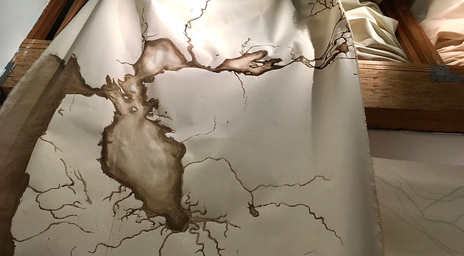
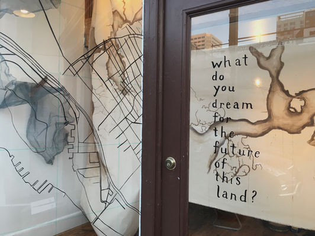
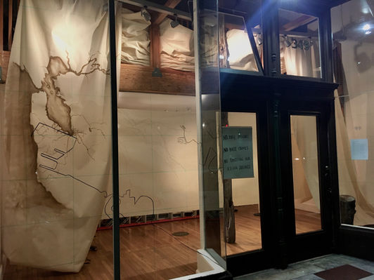

Carissa Lillian Clark Residency
March 16 - April 30
What does a map do to a place? How do lines on a piece of paper entangle, disrupt, and erase people's lives? Land surveyors in the 1850s worked in service to the United States to swiftly expand settler colonialism throughout California. These settlers inflicted a devastating genocide on the Indigenous peoples of these valleys, mountains, and coastlines. Entitlement, greed, and massive federal funding fueled this violent era. Maps gave the white settlers an all-seeing vision of access, domination, accumulation, and control. Their maps changed this place.
"A distant ancestor of mine on my mother's side, John 'Jack' Coffee Hays, a military leader during the U.S. Invasion of Mexico, followed the gold rush to California. Hays was one of the first U.S. settlers to purchase land from the Peraltas, a Spanish settler family who occupied Huchiun, the unceded land of the Lisjan Ohlone people, in present-day Oakland. In 1852, Hays became the U.S. Surveyor General of California. His maps are blueprints from the origin story of today's society, filled as it is with oppression, displacement, borders, and systemic white supremacy—where capital and property are valued above human life and the health of the land."
"My current work confronts this history's disturbing foundation for the present. I ask: how may I, as a descendant of settlers and uninvited guest on stolen land, condemn the violence, trauma, and destruction caused by my ancestors through my art practice? How may I invite others to reflect on our interconnected and unresolved histories to share visions for the future—a future that prioritizes the people who have lived in loving relationship with this land for thousands of generations? How can maps help us see the ways the present is shaped by the past, so that we may navigate into new and radical terrain?"
Until the end of April, I will be exploring these issues through a performative and participatory installation at Dream Farm Commons. On the tall storefront windows, I am painting a map of Oakland. I invite you to consider the interwoven histories that have brought you onto this Lisjan Ohlone land known as Huchiun—consider your relationship with this land—and I invite you to imagine the futures possible here.
This work is unfinished. This work will never be finished. Generations into the future, I hope my descendants and their descendants find new ways to condemn and counteract the harms caused by me, my lineage, and by all of us who are benefitting from the injustices committed on this land. I hope this work opens doors for transformative conversations and sheds light on the vast landscape of our collective imagination.
 